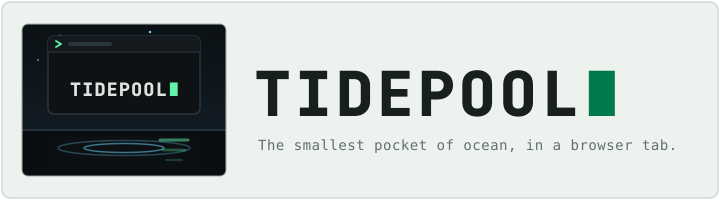

A terminal-first portfolio rendered with xterm.js. Explore a developer profile through a real shell — virtual filesystem, tab completion, command history, and daily GitHub data with zero runtime API calls.
Capabilities
Fourteen commands over a virtual Unix filesystem, rendered by xterm.js with 24-bit ANSI color — the same terminal engine VS Code uses.
Full xterm.js implementation with 24-bit ANSI color, 1000-line scrollback, and clickable links via addon-web-links.
Navigate directories and read files with standard Unix semantics — ~, -, and .. all work as you'd expect.
From help to neofetch — a categorized catalog with aliases, so ls, dir, and ll all land somewhere sensible.
A daily GitHub Action fetches repo data and commits it to github.json — no API tokens or runtime calls ever reach the frontend.
Every command is bookmarkable — #neofetch or #cat about.md in the URL auto-runs on page load.
Tab completes commands and file paths; arrow keys browse a 200-entry history persisted in localStorage on your device only.
Reference
Every page in the portfolio is a command. Tab completes, arrows browse history, and the URL hash makes any of it permalinkable.
help · ?Categorized command listingclear · clsClear the terminalhistoryNumbered command historywhoamiDisplay current userpwdPrint working directorycdChange directory (~ · - · ..)ls · dir · llList directory in grid or long formcat · less · moreDisplay file contentsaboutAbout mecontact · email · socialsContact informationresume · cvView resumeskills · tech · stackSkills with progress barsrepos · projectsGitHub repositories tableneofetch · fetchSystem info with ASCII artTabAutocomplete commands and file paths↑ / ↓Browse command historyCtrl+C · Ctrl+L · Ctrl+UCancel input · clear screen · clear lineGet started
help to see the catalog.neofetch, repos, or cat about.md.Real-Fruit-Snacks/Tidepool (Node 20+).npm install.npm run dev and open the printed URL.src/content.js with your bio, resume, and skills.